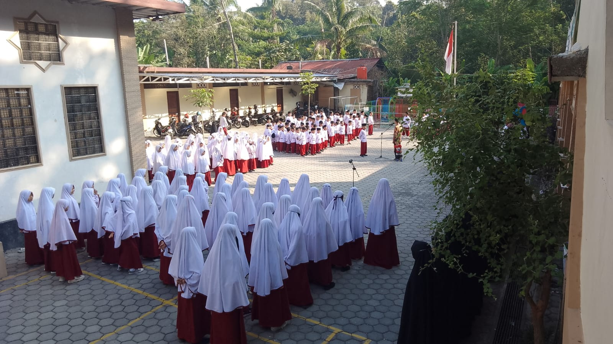
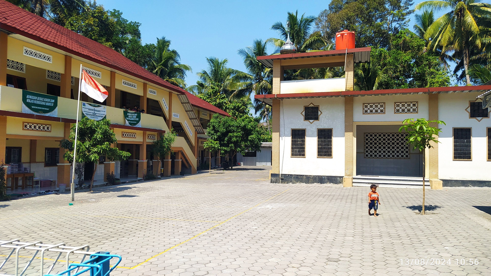

📖
Tahfidzul Qur'an
Mendampingi santri dalam proses belajar dan bertumbuh bersama Al-Qur'an.
SPMB (SELEKSI PENERIMAAN MURID BARU)
Pendidikan yang mengintegrasikan Tahfidzul Qur'an, Kurikulum Diniyah, dan Pendidikan Umum Paket A – Setara SD.


MENGENAL MSUTQ
MSUTQ Al Furqon Magelang hadir sebagai lingkungan pendidikan yang mendampingi pertumbuhan santri melalui pembinaan Al-Qur'an, pendidikan Diniyah, dan pendidikan umum.
“Mencetak generasi Islam unggulan dengan pemahaman sesuai Al Qur’an dan As Sunah yang shahih, berakhlak mulia, cerdas, terampil dan berwawasan luas.”
PENDIDIKAN TERINTEGRASI
Proses pendidikan yang mengintegrasikan pembinaan Al-Qur'an, pembelajaran Diniyah, dan pendidikan umum.
Mendampingi santri dalam proses belajar dan bertumbuh bersama Al-Qur'an.
Pembelajaran keislaman sebagai bagian dari proses pendidikan dan pembentukan nilai-nilai Islami.
Pendidikan umum melalui Program Kesetaraan Paket A – Setara SD di bawah PKBM Al Furqon Magelang.
KEHIDUPAN SANTRI
Membiasakan ibadah sunnah sebagai bagian dari aktivitas harian santri.
Membiasakan pelaksanaan sholat berjamaah dalam kehidupan sehari-hari.
Mendampingi kedekatan santri dengan Al-Qur'an melalui aktivitas belajar dan pembiasaan harian.
Membiasakan sikap santun, tanggung jawab, kepedulian, dan adab dalam kehidupan bersama.
Mendampingi santri belajar mengelola kebutuhan pribadi dan menjalankan tanggung jawab sesuai tahap perkembangannya.
KEGIATAN UNGGULAN
Proses belajar dirancang secara terintegrasi agar pembelajaran Al-Qur'an, pendidikan Diniyah, pendidikan umum, dan pengembangan potensi saling melengkapi dalam perjalanan belajar santri.
INFORMASI PENERIMAAN
Sampai kuota terpenuhi
Penerimaan terbatas
Setara SD
Pendidikan Umum
Kuota Prioritas: Santri lulusan TKITQ Al Furqon mendapatkan prioritas dalam penerimaan MSUTQ Al Furqon.
ALUR PENDAFTARAN
Melalui formulir pendaftaran.
Tim SPMB melakukan verifikasi data pendaftar.
Mengikuti proses pemetaan sesuai ketentuan SPMB.
Informasi hasil pemetaan disampaikan oleh Tim SPMB.
Melengkapi proses administrasi bagi calon santri yang diterima.
INFORMASI BIAYA
Untuk informasi biaya pendidikan dan kebutuhan lainnya, silakan berkonsultasi langsung dengan Tim SPMB MSUTQ Al Furqon Magelang.
FAQ
Pendaftaran MSUTQ Al Furqon Magelang T.A. 2027/2028 dibuka mulai 01 Oktober 2026 dan berlangsung hingga kuota penerimaan terpenuhi.
Kuota penerimaan MSUTQ Al Furqon Magelang T.A. 2027/2028 adalah sebanyak 40 santri. Penerimaan dilakukan secara terbatas.
Santri lulusan TKITQ Al Furqon yang melanjutkan pendidikan ke MSUTQ Al Furqon mendapatkan kuota prioritas sesuai ketentuan penerimaan yang berlaku.
Pada penerimaan T.A. 2027/2028, MSUTQ Al Furqon Magelang membuka Program Kesetaraan Paket A – Setara SD.
Pendidikan di MSUTQ Al Furqon Magelang mengintegrasikan Tahfidzul Qur'an, Kurikulum Diniyah, dan Pendidikan Umum Paket A. Proses belajar juga didukung pembiasaan kehidupan sehari-hari serta pengembangan minat, keterampilan, dan potensi santri.
Ya. Lulusan Program Kesetaraan Paket A dapat melanjutkan pendidikan ke jenjang SMP, MTs, maupun pondok pesantren lanjutan sesuai ketentuan dan persyaratan penerimaan masing-masing lembaga.
Informasi mengenai biaya pendidikan dan kebutuhan lainnya dapat dikonsultasikan langsung dengan Tim SPMB MSUTQ Al Furqon Magelang melalui layanan WhatsApp.
Silakan menggunakan tombol Konsultasi via WhatsApp yang tersedia pada halaman ini untuk menghubungi Tim SPMB.
SPMB 2027/2028
Mulailah perjalanan pendidikan putra-putri Anda bersama MSUTQ Al Furqon Magelang.
Pendaftaran dilakukan melalui formulir online. Silakan klik tombol Daftar Sekarang untuk mengisi formulir pendaftaran.